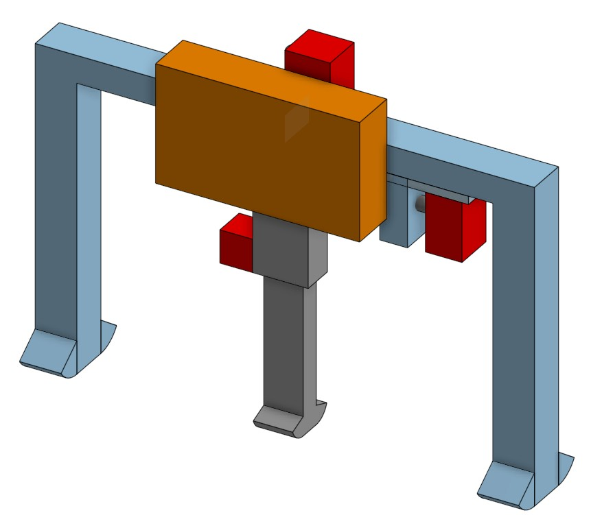
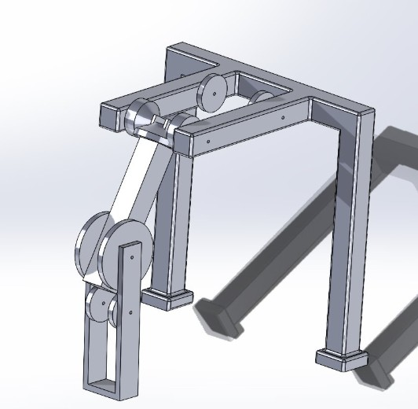
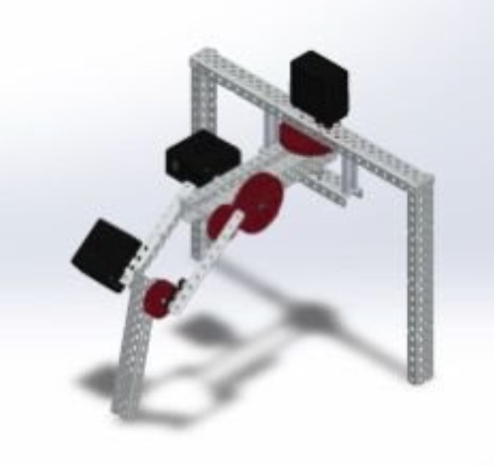
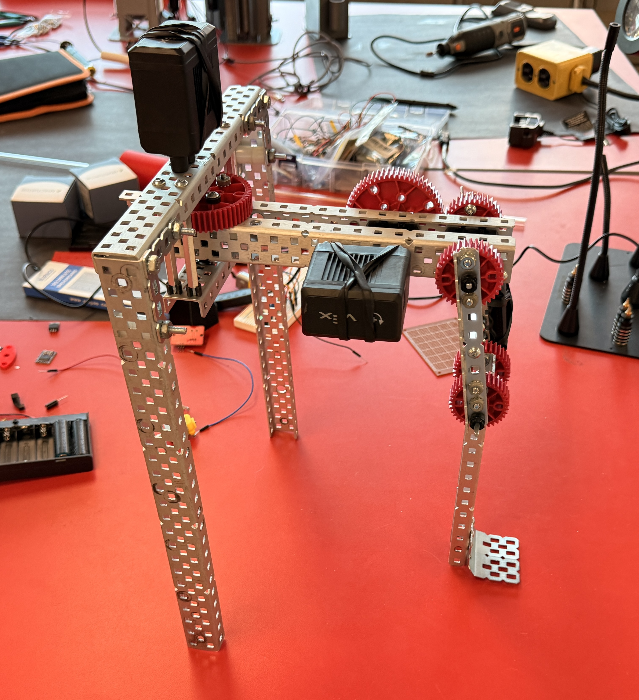
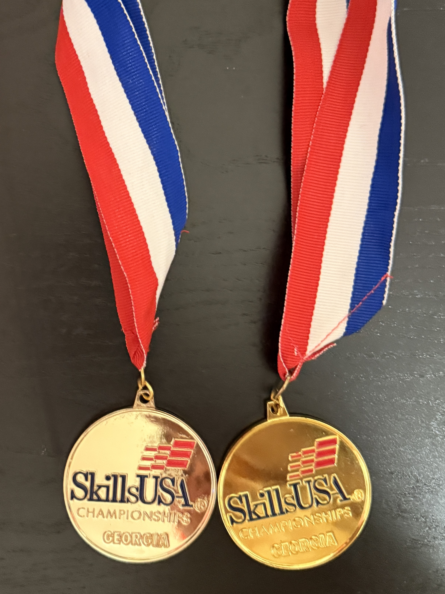
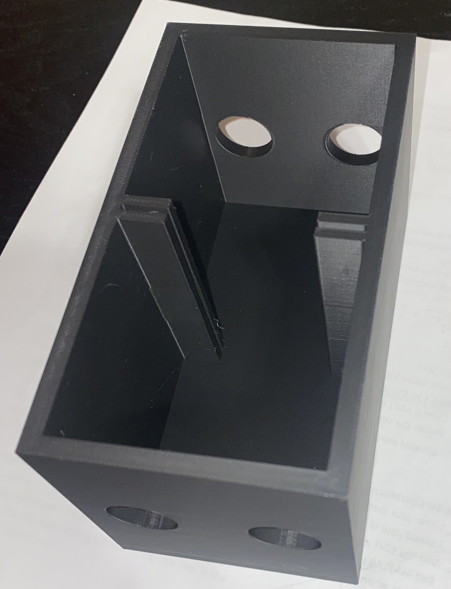

Most walking robots are over-engineered. They tend to use a multitude of motors, increasing the weight and cost significantly. My research group at KSU wanted to strip that complexity away. We aimed to build a "tripedal" robot that mimics crutch-assisted walking—using geometry to cut costs while creating a reliable base for everyday robotics.
To get to a working model, we had to work through many iterations. Using CAD, we came up with basic designs and discussed the benefits and drawbacks of each to land on the one we ultimately built.

Concept A (My Pitch)
I pushed for a single-plane linkage. It addressed most of our issues; however, it was somewhat unstable. If the robot was nudged, a force from the front or back would have caused it to tip over.

Concept B (Teammate)
A cool concept proposed by one of my teammates. However, the "knee" joint was far too complex for our manufacturing goals.

Final Selection
We compromised. We adopted a hybrid design that offered the best stability without adding unnecessary complexity.
The Build Phase
Once the CAD was locked in, I moved to fabrication. For this phase, we used VEX Aluminum structures and motors; this reduced the amount of time we waited around for parts to print while simultaneously being much stronger. After this, the plan is to work on making a version that ditches the bulky VEX components for something smaller and lighter.
Right now, I'm working on the software. The goal is for this robot to be able to climb stairs, traverse obstacles, and much more, all while making the physical design simpler and cheaper to manufacture.

The current physical prototype in the KSU Robotics Lab.
I run a photography business on the side, and I hit a major wall: merging HDR photos. Aligning and merging brackets manually took about 5 minutes per set. When you have 500 photos, manually doing all of that is a waste of time.
So, I engineered a Python script to do the boring stuff for me. It interacts with the Hugin engine to sort, align, and merge the files automatically, so I can work on something else while this task completes itself.
import os
import subprocess
import glob
import shutil
def find_hugin_tools():
align_name = "align_image_stack.exe"
enfuse_name = "enfuse.exe"
search_paths = [os.getcwd(), r"C:\Program Files\Hugin\bin"]
found_align = None
found_enfuse = None
if shutil.which("align_image_stack"): found_align = "align_image_stack"
if shutil.which("enfuse"): found_enfuse = "enfuse"
return found_align, found_enfuse
def group_by_count(folder_path):
files = []
for ext in ['*.tif', '*.jpg']:
files.extend(glob.glob(os.path.join(folder_path, ext)))
files.sort()
groups = []
for i in range(0, len(files), 5):
chunk = files[i:i + 5]
if len(chunk) == 5:
groups.append(chunk)
return groups
def process_groups(groups, output_folder, align_tool, enfuse_tool):
if not os.path.exists(output_folder):
os.makedirs(output_folder)
for index, group in enumerate(groups):
print(f"Processing Set {index + 1}...")
base_name = os.path.splitext(os.path.basename(group[0]))[0]
output_filename = os.path.join(output_folder, f"{base_name}_fused.tif")
aligned_prefix = os.path.join(output_folder, "temp_aligned_")
try:
print(" > Aligning...")
subprocess.run([align_tool, "-m", "-a", aligned_prefix] + group)
aligned_files = glob.glob(aligned_prefix + "*.tif")
print(" > Blending...")
cmd = [
enfuse_tool,
"--output", output_filename,
"--exposure-weight=1.0",
"--saturation-weight=0.2",
"--contrast-weight=0"
] + aligned_files
subprocess.run(cmd)
for f in aligned_files:
os.remove(f)
except Exception as e:
print(f" ! Error: {e}")
if __name__ == "__main__":
current_folder = os.getcwd()
output_dir = os.path.join(current_folder, "Enfused_Output")
align_tool, enfuse_tool = find_hugin_tools()
if align_tool and enfuse_tool:
bracket_groups = group_by_count(current_folder)
process_groups(bracket_groups, output_dir, align_tool, enfuse_tool)
Legacy Competitions
Before college, I spent years competing in technical events. This is where I learned to prototype fast and fail faster.
SkillsUSA Robotics
I competed in the Robotics & Autonomous Technology division. At the state level, we had to showcase our knowledge of robotics via testing. If they found us to be good, we would move onto actually making a robot under a set amount of time in nationals. We took home the State Gold Medal two years in a row (2024 & 2025).

Glucose Fuel Cell
In high school, I was really interested in alternative clean energy, so I made a glucose fuel cell which took a glucose and water solution and oxidized it using potassium hydroxide. I faced many limitations; however, this setup still generated a measurable current, although it would struggle to light an LED. In the future, I hope to improve this so it can charge a battery.
